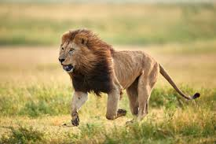

LEON

Los leones habitan principalmente en las sabanas y pastizales de África, aunque algunos grupos también viven en bosques y matorrales. Son animales sociales que viven en grupos llamados manadas, liderados por un macho dominante. Las manadas suelen estar compuestas por varias hembras, sus crías y uno o dos machos adultos. Los leones son depredadores carnívoros que cazan en grupo, principalmente presas grandes como cebras, ñus y gacelas.
- Melena: Los machos tienen una melena distintiva de pelo largo alrededor del cuello y la cabeza, que les da una apariencia imponente y les ayuda a protegerse durante las peleas.
- Rugido: Los leones son conocidos por su rugido poderoso y profundo, que puede ser escuchado a varios kilómetros de distancia. Lo utilizan para comunicarse entre ellos, marcar territorio y ahuyentar a los rivales.
- Cazadores cooperativos: Los leones son cazadores sociales que trabajan juntos para derribar presas grandes. Las hembras son las principales cazadoras, mientras que los machos protegen el territorio y las crías.
- Dimorfismo sexual: Los machos son significativamente más grandes que las hembras, con una melena prominente y un peso promedio de 150-250 kg. Las hembras pesan entre 110-180 kg.
- Crianza de los cachorros: Las leonas son las principales cuidadoras de las crías. Protegen y alimentan a los cachorros durante los primeros años de vida, enseñándoles las habilidades de supervivencia y caza
menu